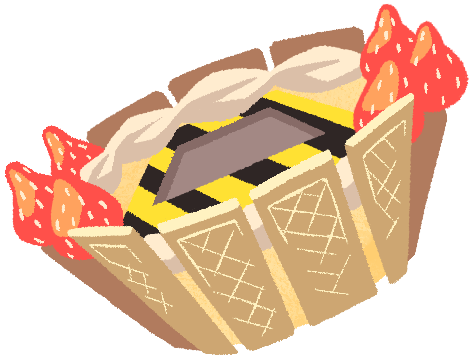

Dai CakeA large cake-shaped Isogashimachine. While delicious looking, there are several reasons why it should be labeled "NOT EDIBLE". The cake in the middle rotates, splashing whipped cream and other kinds of food all over the place, creating a mess and forcing people to clean up. It's quite a nuisance. |
 |